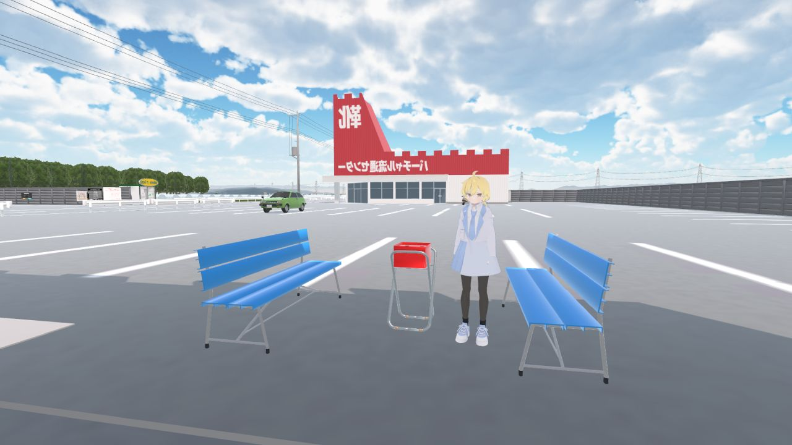
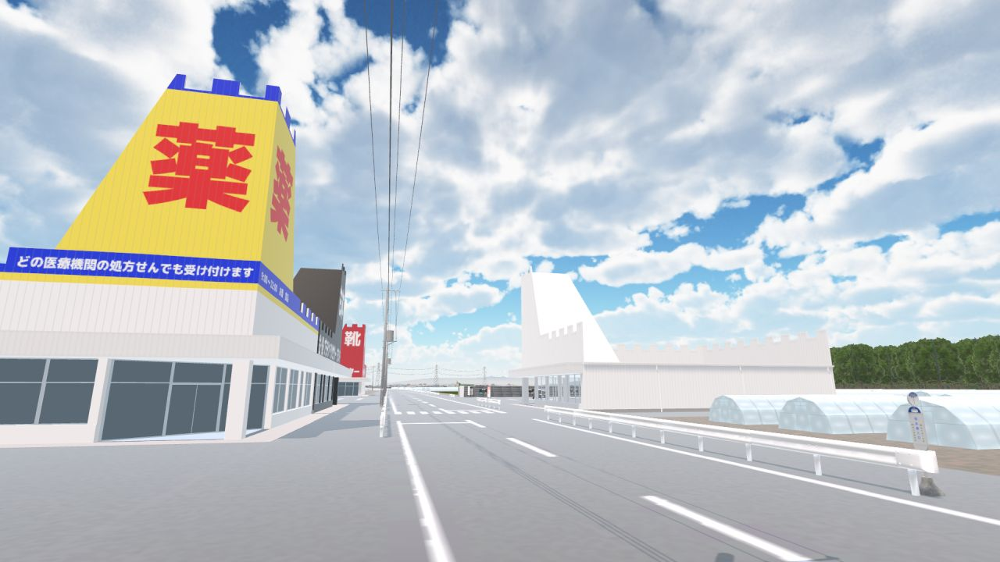
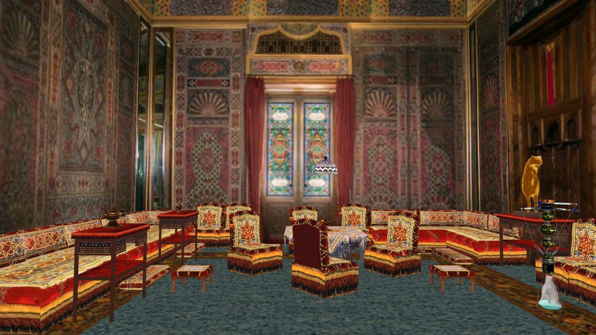
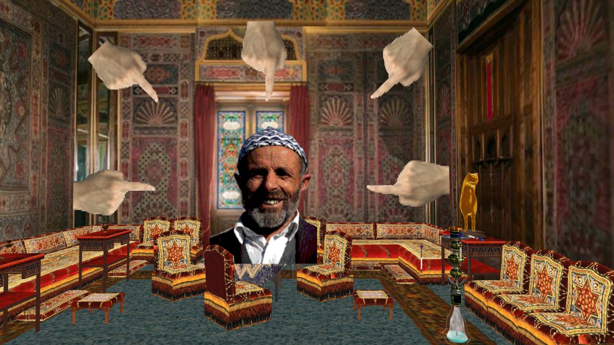

お城の形の居抜き店舗と郊外風景のワールドです。
 ワールドをLaunchする：https://vrchat.com/home/launch?worldId=wrld_10d5a63b-1a2d-435e-a8b9-1af0e29e9cb1
Hatten är din
 Hatten är dinは2001年に制作されたFlash動画のはしり。
内容はレバノンのミュージシャン、Azar Habibの1981年の楽曲『Miin Ma Kenti』のスウェーデン語による空耳だが、それ以前にはこういった長編のFlash動画が一般的ではなかったため、当時のインターネットで大々的に流行した（詳しくはWikipediaにも記事がある）。
というところまでは知られているのだが、このワールドを制作する際に、Flashで使われている背景の画像はどこなのか調べたところ、ルーマニアにあるペレシュ城（Wikipedia）だということがわかった。ペレシュ城には「トルコの間」というトルコ趣味の部屋があり、喫煙室として（おそらくシーシャを喫煙するための部屋として）使われていたらしい。
Hatten är dinの背景がルーマニアのペレシュ城だということはおそらく自分が気づくまでネット上に指摘がなかったのでここに書き記しておく（以前同内容をはてなブログにも書いたのだが消してしまったのでこちらに再記）。
ワールドをLaunchする：https://vrchat.com/home/launch?worldId=wrld_f1130472-c8ef-4337-880a-f57045fa343e
©2024 obscura.su